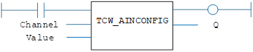

I/O Function.
Set the mode of operation for an analogue input.
|
Channel : INT; |
Analogue input channel number. |
|
|
Value : UINT; |
0 |
Bipolar, -10 V .. +10 V |
|
1 |
Unipolar, 0 .. +10 V |
|
|
2 |
Bipolar, -5 V .. +5 V |
|
|
3 |
Unipolar, 0 .. +5 V |
|
|
Q : DINT; |
|
Set the mode of operation for an analogue input. This operation can be performed on any external analogue input from a Trio CAN Analogue input module P326/P328.
This function requires CANIO firmware 2.3.2 or later.
The CAN analogue module P326 has 8 x 12 bit inputs.
The CAN analogue module P328 has 8 x 16 bit inputs.
TCW_AINCONFIG (Channel, Value);
Set the range of the analog input 5.
TC W _AINCONFIG ( 5, 3 );

Not available.